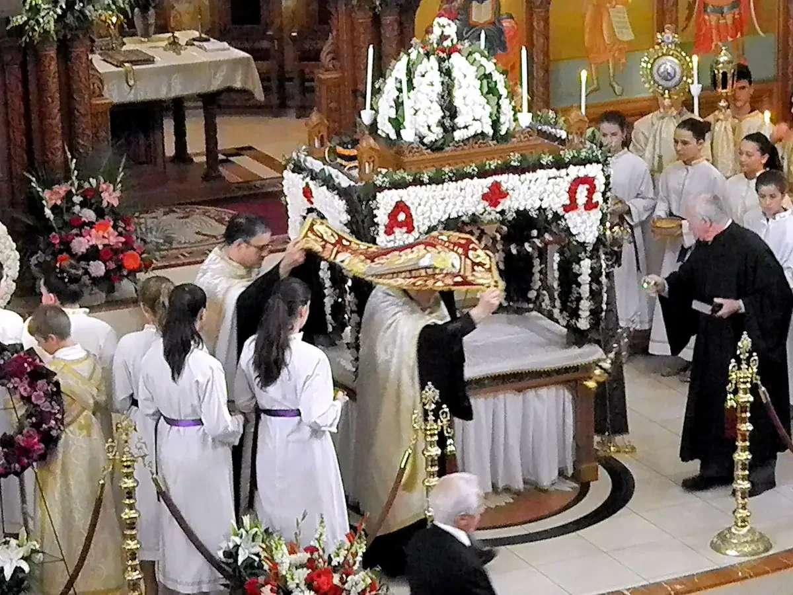
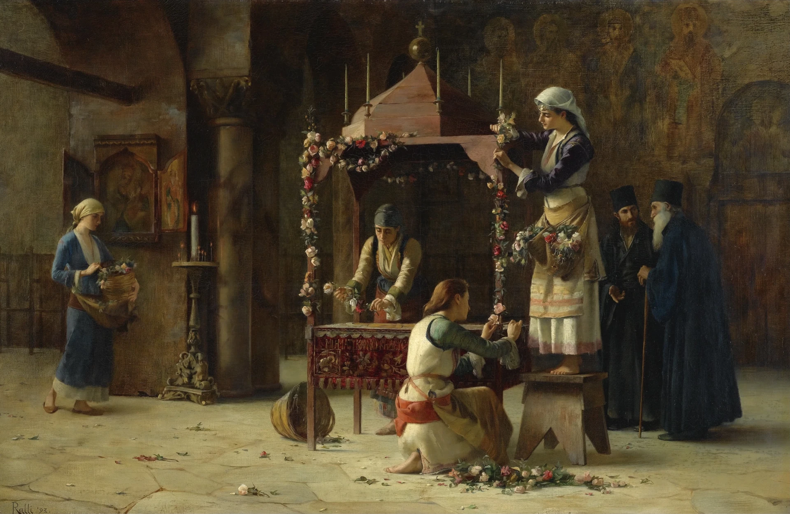
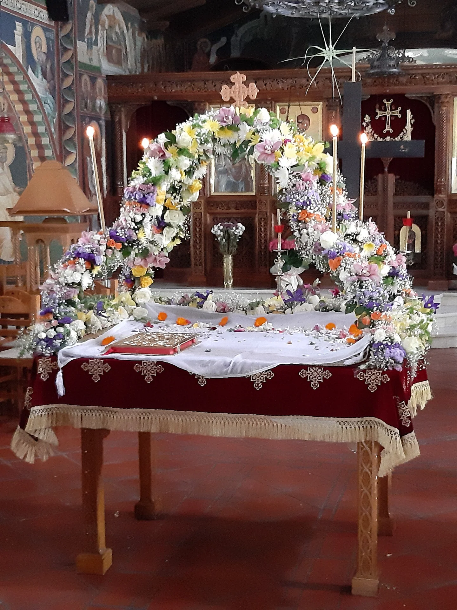
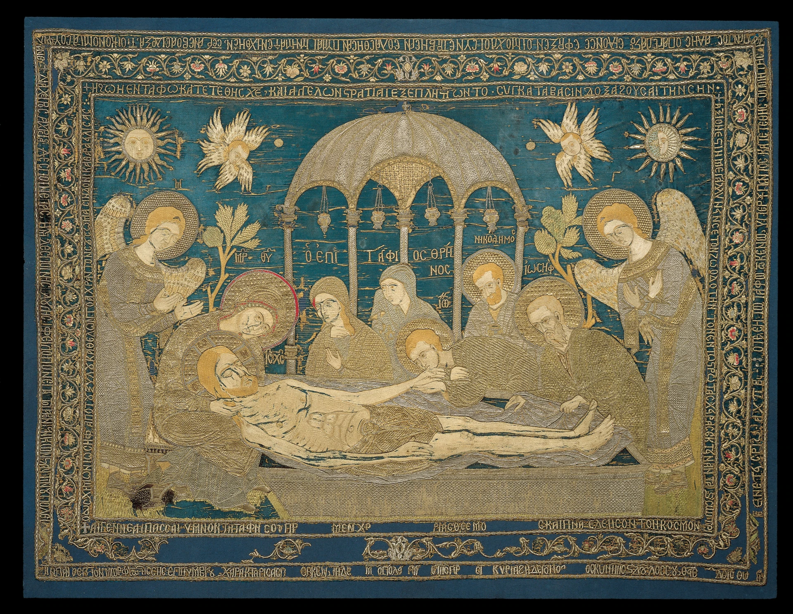
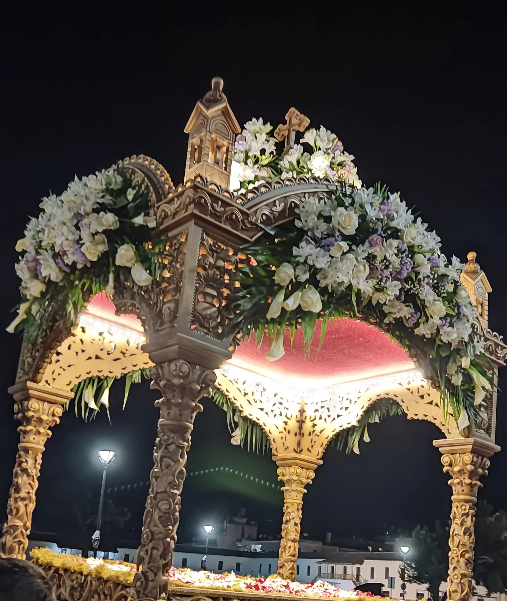

아직 펼치지 않은 카드거리로 나온 성주간 · 4그리스 성금요일 에피타피오스정교회의 성금요일, 사람들은 꽃으로 뒤덮은 관을 메고 동네를 돌아요. 이 관에는 무엇이 놓여 있을까요?꽃으로 덮은 관을 메고 동네를 한 바퀴 돈대.
해마다 정교회 성금요일그리스 등 정교회 세계 · 아침부터 밤까지
그리스 성금요일 에피타피오스
정교회의 성금요일, 성당에서는 그리스도의 무덤을 꽃으로 꾸미고 그 안에 수놓은 천 ‘에피타피오스’를 모셔요. 밤에는 그 곁에서 애가를 부르고, 관을 메고 동네를 돈 뒤 몸을 굽혀 그 아래로 성당에 들어가요. 1682년에 금실로 수놓은 천을 촛불로 비춰 보세요.
꽃으로 덮은 관 안에, 금실로 수놓은 천이 있대. 촛불로 비춰 볼까?
검수 전 시안이에요(기준서 2판). 장면에는 정교회 교회들의 안내와 박물관 기록, 신문 기사, 애가 원문에 있는 것만 옮겼어요. 애가와 성경은 이 안내서가 우리말로 옮기거나 풀어 썼어요. 상상은 ‘눈 감고 상상해 보기’에만 썼어요.
시안 확인용카드 단계 미리 보기
1
성금요일 아침, 꽃을 다는 손
정교회의 성금요일(부활절 전 금요일) 아침, 성당에서는 그리스도의 무덤을 나타내는 나무 관 ‘쿠부클리온’을 꽃으로 꾸며요. 이 일은 흔히 교구의 젊은 여성들이 맡아요.
그리스 화가 테오도로스 랄리스가 1893년에 그린 「그리스의 성금요일」이에요. 한 사람은 나무 걸상에 올라서서 지붕 기둥에 꽃줄을 감고, 한 사람은 무릎을 꿇고 아래쪽에 꽃을 달아요. 오른쪽에서는 검은 옷의 성직자 두 사람이 지켜봐요.

꽃줄을 감아서 관을 예쁘게 꾸며.
물어보기그림에서 걸상 위에 올라선 사람을 찾아볼래?
2
꽃 속에 모신 천
그날 ‘십자가에서 내리심’을 기억하는 저녁기도 때, 사제는 수놓은 천 에피타피오스를 꽃으로 꾸민 관 안에 정중히 모셔요. 그 위에 장미수를 뿌리고, 꽃잎과 꽃송이로 덮은 뒤 복음서를 올려요.
사진은 2019년 그리스의 성금요일에 찍은 관이에요. 꽃으로 엮은 아치 아래 흰 천 위에, 붉은 표지의 복음서와 주황 꽃잎이 놓여 있어요.

수놓은 천을 꽃 속에 눕히고, 성경책을 올려.
물어보기관 위에 놓인 빨간 책을 찾아볼래?
3
촛불로 비춰 보는 천
‘에피타피오스’는 그리스어로 ‘무덤 위에’라는 뜻이에요. 무덤에 누인 그리스도의 몸을 수놓은 천 이콘이에요.
이 천은 1682년 콘스탄티노폴리스(오늘의 이스탄불)에서 이름난 자수가 데스포이네타가 금실로 수놓아, 앙카라의 성 게오르기오스 성당에 바친 것이에요. 가로 1.5미터, 세로 1.12미터이고, 지금은 아테네의 베나키 박물관에 있어요.
금요일 밤 예배는 에피타피오스를 모신 관 둘레에서 드려요. 손가락으로 문질러, 촛불을 비추듯 이 천을 가까이 들여다보세요.
손가락이나 마우스로 문질러 촛불을 비춰 보세요. 빛이 닿으면 숨은 이름이 떠요.

데스포이네타가 금실로 수놓은 에피타피오스 · 1682년 · 아테네 베나키 박물관 · 그림: 데스포이네타(1682) · 퍼블릭 도메인 · 위키미디어 공용(구글 아트 프로젝트, 베나키 박물관)
빛이 닿으면 숨은 표시가 나타나요.
천 위쪽에는 등잔이 매달린 둥근 지붕, 얼굴이 있는 해와 달, 날개 달린 천사들도 수놓여 있어요. 둘레에는 꽃무늬와 그리스어 글자가 빙 둘러 있어요.
“생명이신 그리스도여, 당신이 무덤에 누우시니, 천사의 무리가 놀라 당신의 낮아지심을 찬양했어요.”
금요일 밤에 부르는 애가 「엥코미아」 첫 구절 · 그리스어 원문을 이 안내서가 옮김
애가는 세 부분으로 되어 있어요. 노래가 이어지는 동안, 사제는 관과 사람들 위에 장미수를 뿌려요.
촛불로 비추듯, 금실로 수놓은 천을 들여다보자.
물어보기예수님의 머리를 안고 있는 사람은 누굴까?
4
밤거리를 지나, 관 아래로
애가가 끝나면, 종이 장례 종소리를 울리는 가운데 사람들이 관을 메고 성당을 나서 동네 거리를 돌아요. 사람들은 애가를 부르며 뒤따라요.
사진은 2023년 성금요일 밤 10시쯤, 그리스 아르고스의 장터 거리를 지나는 관이에요. 꽃을 얹은 금빛 지붕 아래, 꽃잎으로 덮인 관이 지나가요.

행렬이 돌아오면, 어떤 성당은 문 앞에서 관을 허리보다 높이 들어요. 사람들은 몸을 굽혀 그 아래를 지나 성당에 들어가요. 그리스도의 죽음과 부활 안으로 들어간다는 뜻이래요.
그리고 토요일 내내, 사람들은 다시 와서 무덤 앞에 머물러요.
밤에 꽃 관을 메고 동네를 돌아.
물어보기돌아와서 관 아래를 지날 때, 왜 몸을 굽힐까?
눈 감고 상상해 보기
어두운 성당 안에 촛불이 하나둘 켜져요. 장미수 냄새와 꽃향기 사이로 낮은 노래가 겹겹이 흘러요. 밖에서는 종이 천천히, 한 번씩 울려요.
눈을 감아 봐. 꽃향기가 나. 종이 뎅, 뎅, 천천히 울려.
나의 자리
슬픔을 서둘러 건너뛰지 않고 함께 머물러 준 사람이 있었나요?
슬픈 친구 곁에 함께 있어 준 적 있어?
마음에 닿는 한 줄을 고르거나 직접 써 보세요. 한 줄을 남기면 이 자리의 도장이 찍혀요. 이 기기에만 저장돼요.
더 깊이
궁금한 칸만 펼쳐 읽어도 괜찮아요.
알고 보면
천 이콘 에피타피오스에는 그리스도 한 분만 수놓기도 하고, 천사와 함께, 또는 이 천처럼 ‘무덤 곁의 애가’ 장면으로 수놓기도 해요. 그리스 리포터는 에피타피오스를 흔히 천에 화려하게 수놓은 것이라고 소개해요.
토요일의 아침기도 금요일 밤의 애가 예배는 사실 ‘성토요일 아침기도’예요. 토요일 아침을 앞당겨 금요일 밤에 드려요. 이때 부르는 애가를 그리스어로 ‘엥코미아’라고 해요.
요한복음의 장면 수놓은 장면은 요한복음 19장에 바탕을 두어요. 아리마대 사람 요셉이 예수의 몸을 내어 달라고 청했고, 니고데모는 몰약과 침향 섞은 것을 백 리트라(30킬로그램 남짓)쯤 가져왔어요. 둘은 예수의 몸을 향품과 함께 세마포로 싸서, 아직 아무도 묻힌 적 없는 동산의 새 무덤에 모셨어요(요한복음 19장 38~42절).
마을마다 다른 점
행렬이 멈추는 곳 미국의 한 정교회는 행렬이 성당 바깥을 한 바퀴 돈다고 안내하고, 그리스 리포터는 관이 동네 거리를 돈다고 전해요. 파로스섬의 행렬은 열다섯 곳에서 멈춰요(토 비마).
장미수와 향수 사제가 관과 사람들 위에 장미수를 뿌리는 것 말고도, 산토리니섬 피르고스에서는 여인들이 발코니에서 장미수를 뿌리고, 아모르고스섬에서는 행렬 위로 향수를 뿌려요(토 비마).
관 아래를 지나는 곳 모든 성당이 문 앞에서 관을 들어 올리지는 않아요. 홀리 크로스 교회는 ‘어떤 교회들’이 그렇게 한다고 하고, 그리스 리포터도 ‘때때로’라고 적어요.
직접 가 보기
확인한 날 · 2026년 11월 18일 · 바뀌기 쉬운 정보라 정기적으로 다시 확인해요
2027년 정교회 성금요일은 4월 30일이에요. 예배와 행렬 시간은 성당마다 달라요. 데스포이네타의 천은 아테네 베나키 박물관 소장품이에요. 전시 중인지는 가기 전에 박물관에 확인해요.
다섯 곳 비추기 금박
촛불로 천을 비춰 숨은 다섯 곳을 모두 찾으면 카드에 금박이 입혀져요.
숨은 다섯 곳을 모두 비춰 보기
아이와 함께 채색
아이와 함께 ‘영화처럼 보기’를 끝까지 보면 카드가 채색돼요.
아이와 함께 ‘영화처럼 보기’를 끝까지 보기
근거 보기 (10)
- 슈루즈베리 그리스 정교회(영국): 에피타피오스 — ‘무덤 위에’라는 뜻, 천 이콘의 세 가지 꼴, ‘무덤 곁의 애가’(에피타피오스 트레노스)의 사람들(머리를 안은 어머니, 슬퍼하는 여인들, 발치의 요셉과 곁의 니고데모, 손에 입 맞추는 요한, 예배용 부채를 든 천사), 아침에 교구의 젊은 여성들이 쿠부클리온을 꽃으로 꾸밈, 저녁기도 때 관 안에 모심, 장미수·꽃잎·복음서
- 구글 아트 앤 컬처(베나키 박물관): 금실로 수놓은 에피타피오스 — 이름난 자수가 데스포이네타, 1682년 콘스탄티노폴리스, 앙카라의 성 게오르기오스 성당에 바침, ‘애가’ 장면, 1.12×1.50m, ΓΕ 34604
- 홀리 크로스 정교회(미국 메릴랜드, 2023): 금요일 밤 = 성토요일 아침기도 ‘무덤 곁의 애가’, 무덤 둘레에서 드림, 대영광송 때 성당 바깥을 도는 행렬, 어떤 교회는 문 앞에서 허리보다 높이 들어 몸을 굽혀 지남 — 그리스도의 죽음과 부활 안으로 들어감
- 성 바울 그리스 정교회(미국 어바인): 「엥코미아(애가)」 — 성금요일 밤, 토요일 아침을 앞당겨 부름, 세 부분, 첫 구절, 사제가 무덤과 사람들 위에 장미수를 뿌림
- 오르토독시아 뉴스 에이전시(2019년 4월 26일): 엥코미아 첫째 부분 그리스어 원문
- 그리스 리포터(2026): 성금요일 에피타피오스 — 흔히 천에 화려하게 수놓음, 흰·빨강·보라 봄꽃, 꽃잎·장미수·초, 장례 종소리, 애가를 부르며 행렬, 때때로 문 위로 들어 그 아래로 들어감, 토요일 내내 무덤을 찾음
- 그리스 시티 타임스(2022년 4월 23일): 전통적으로 소녀와 여성들이 생화로 꾸밈, 종소리, 문 위로 들어 그 아래로 지남, 토요일 내내 찾음
- 토 비마(2026년 4월 10일): 마을마다 다른 성금요일 — 파로스섬 열다섯 곳에서 멈춤, 산토리니 피르고스의 장미수, 아모르고스의 향수
- 요한복음 19장 38~42절(개역개정) — 아리마대 사람 요셉과 니고데모, 향품과 세마포, 새 무덤
- 위키미디어 공용: 테오도로스 랄리스 「그리스의 성금요일」(1893) · 2019년 성금요일의 꽃 관(Mainstream2004) · 2023년 4월 14일 아르고스 장터 거리의 행렬(NikosLikomitros)
그림·사진·소리 출처
‘처음 만나는 기독교 문화’의 깊은 카드예요. 카드 단계와 남긴 글은 이 기기에만 저장돼요.